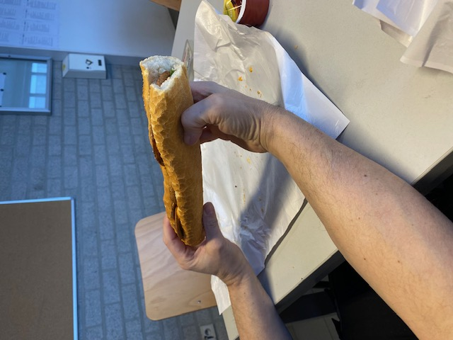
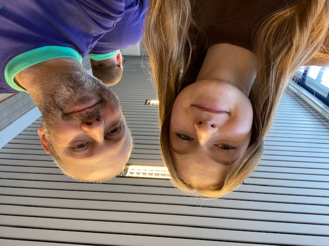

Dagverslag 5: Vrijdag 20/01
Begintijd: 8:30 Eindtijd: 14:00 Pauzes: 9:45 tot 10:00, 12:00 tot 12:30
Mijn laatste stagedag begon rustig, omdat Els te laat was door de sneeuw zijn we pas begonnen om 9:15 uur. Toen ze aangekomen was heeft Els getoond hoe aankoopfacturen betaald worden. Na de pauze heb ik Nele ontmoet, Nele werkt op de personeelsdienst. Ze heeft mij uitgelegd wat de personeelsadministratie inhoud en hoe dit in mijn stagebedrijf gebeurd. Elke vrijdag kunnen alle werknemers broodjes bestellen voor de middagpauze, mijn papa heeft voor mij ook een broodje besteld. Na de middagpauze heb ik een projectoverleg mogen bijwonen, hierin werd besproken hoe alle lopende projecten verlopen. Dit gaf me meer inzicht over hoeveel projecten mijn stagebedrijf heeft. Om 14 uur liep mijn dag teneinde. Vandaag was een boeiende dag met veel leuke gesprekken met mijn collega’s.
Leerpunt van de dag: Ik wil leren om zelfzekerder te zijn.
Mijn dag in één woord: Boeiend
Foto:
 